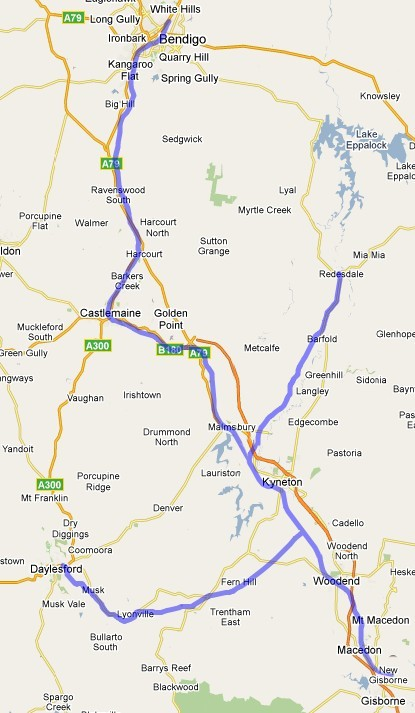

Victoria: Gisborne - Bendigo Route (version 2)
Route design by Russell Beer
Overview
This route covers the Northern Main Line from Gisborne through Kyneton, Castlemaine and Bendigo to North Bendigo Junction. The branchlines to Redesdale (closed 1954) and Daylesford (closed ) are included.

Prototype Operator: Victorian Railways and its successors.
Main line:
- Gisborne - North Bendigo Junction: 63 miles ( 101 km)
Branch lines:
- Carlsruhe - Daylesford: 22 miles ( 35 km)
- Redesdale Junction - Redesdale 16 miles (26 Km)